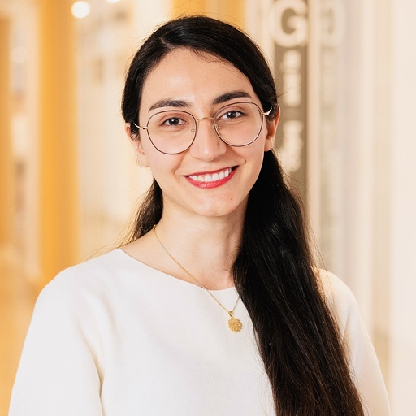

|
I am a Visiting Researcher at ServiceNow Research and a master's student at Université de Montréal and Mila, where I am supervised by Prof. Gauthier Gidel and Prof. Ioannis Mitliagkas. Prior to coming to Montreal, I got my bachelor's degree at Sharif University of Technology in Computer Science. I am interested in the Fundamentals of Machine Learning, Game Theory, and Optimization. My master's research revolved around Performative Prediction, a framework for learning models that actively shape the environment they interact with through their predictions. The primary objective of my research is to push the boundaries of this framework, exploring and identifying new domains where its application can be extended. You can reach me at: mehrnaz.mofakhami@mila.quebec
|
 |
{kind=link}
Projects |
|
Mehrnaz Mofakhami, Ioannis Mitliagkas, Gauthier Gidel AISTATS 2023 paper / video We analyzed the performative prediction framework in the presence of Neural Networks with non-convex loss function using functional analysis. A preliminary version of this work was presented at NeurIPS 2022 workshop on Distribution Shifts. |
|
Adversarial Machine Learning course Report / code In this project, I reproduced the simple setup described in the Adversarial Example Games paper on a binary classification task with logistic regression. |
|
Mehrnaz Mofakhami, AmirHossein Yavari EEML Summer School 2021 - Best poster award Report / code |
Notes |
|
Supplementary material for the Artificial Intelligence Course at SUT - Spring 2021 I wrote this short tutorial while I was a TA in the AI course at Sharif University of Technology. It is an introduction to the main topics in robust and trustworthy ML, including evasion and poisoning attacks, and mechanisms to defend against them. |
|
This scribe note is based on the lectures of Professor Gauthier Gidel in Adversarial Machine Learning course , Winter 2022. |